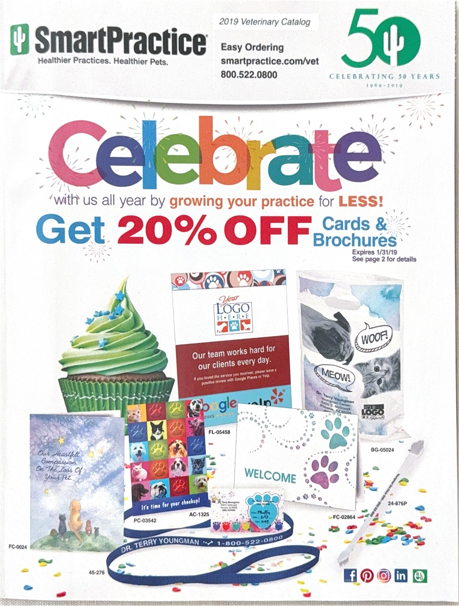
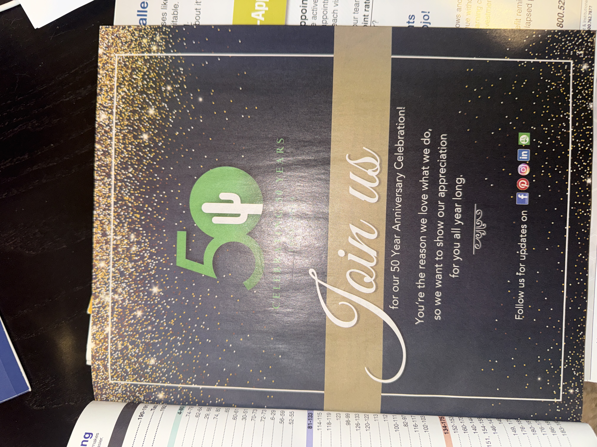
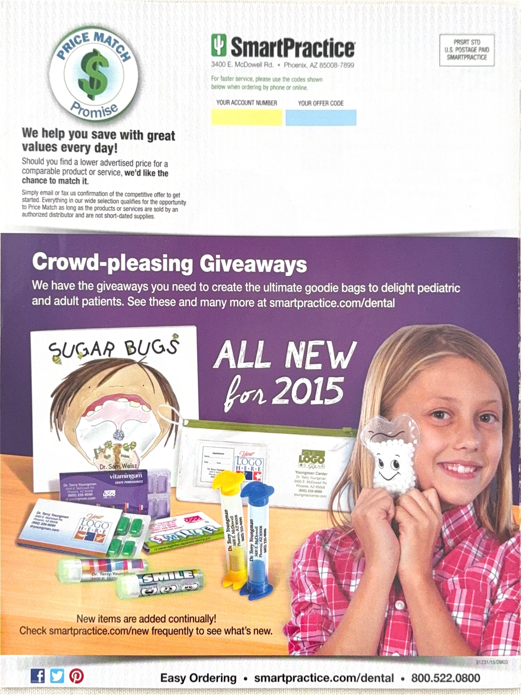

Turning Product Innovation into Measurable Growth
SmartPractice | Product Marketing, Go-to-Market Strategy, Sales Enablement & Brand Leadership
Creating Growth Across a Diverse Product Portfolio
At SmartPractice, I worked across product marketing and brand initiatives serving dental, veterinary, and other healthcare markets. The opportunity was to strengthen product visibility, support sales effectiveness, and create focused growth across multiple product categories.
A Repeatable Approach to Product Growth
I developed a focused product marketing approach that aligned monthly category priorities with targeted messaging and sales enablement.
Each month, I selected a product focus area, such as toothbrushes, goodie bags, appointment reminder cards, or one of the club programs. I then equipped the sales team with materials designed to communicate product benefits and support customer conversations.
This approach generated an average 32% monthly growth within the selected focus areas.
Product Positioning
Connecting product features to customer needs and practical business benefits.
Sales Enablement
Providing targeted materials to help sales teams communicate value and generate demand.
Focused Execution
Prioritizing specific product categories and measuring performance to inform future initiatives.
Zoo Club: Bringing a Distinctive Offering to Market
Zoo Club was a pediatric dental program featuring customized stuffed animals designed to create a memorable experience for dental practices and their young patients.
My product marketing work supported the program's commercial success, with 35 of 42 prospective customers converting, an approximately 83% conversion rate among that group.
Zoo Club and additional print product initiatives contributed to 1,703% growth over a four-month period.
Celebrating 50 Years of SmartPractice
I co-led SmartPractice's 50th marketing campaign, connecting the company's heritage with customer appreciation, brand storytelling, and promotional marketing.
The campaign included branding, customer-focused messaging, and promotional materials across the company's product markets.
Bringing Strategy to Life
Selected examples of print marketing and campaign materials from my SmartPractice experience.



Combining Innovation with Commercial Execution
My SmartPractice experience reflects a combination of product marketing strategy, cross-functional collaboration, sales enablement, and creative campaign leadership.
By focusing marketing resources on specific product opportunities and equipping sales teams with targeted materials, I helped translate product priorities into measurable commercial outcomes.